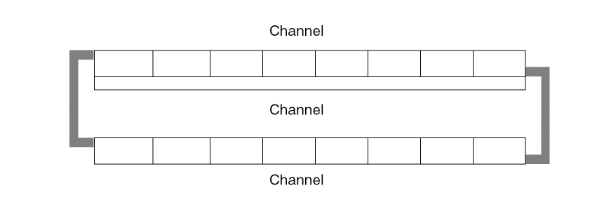
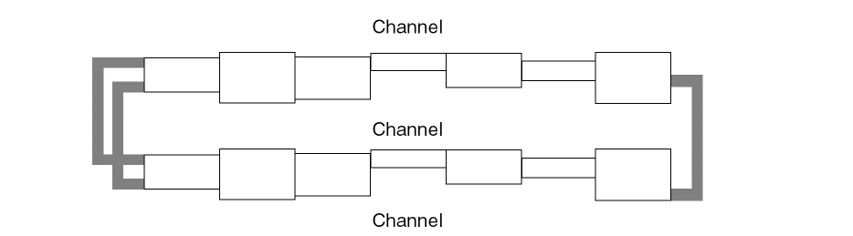
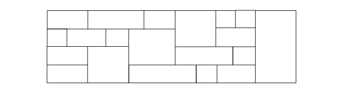
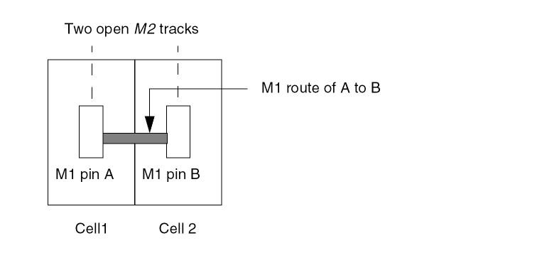
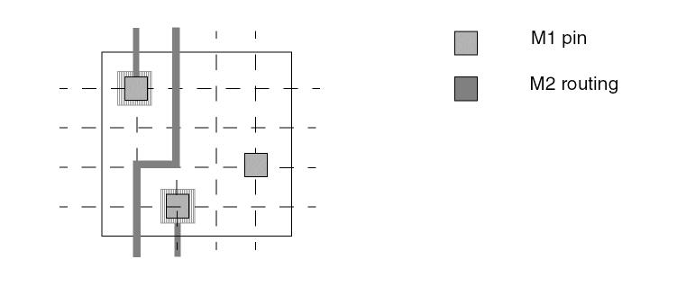

Guidelines for Designing a Cell Library
This topic provides suggestions for optimizing your design at the library level or inter-cell level, to ensure that the individual cells work together as well as possible.
Optimize Cell Widths
-
Avoid creating standard cells of the same type that vary greatly in width.
This results in unbalanced row lengths. In general, the width of the largest standard cells should be no more than five or six times the width of smallest standard cell of the same type in your library.
If you need more complex cells, it is better to double or triple the height of the cells and keep a reasonable cell width. Innovus can optimize the area utilization by mixing single- and multiple-height cells in the core area without creating gaps around multiple-height cells. -
All cell widths should be a multiple of the pin grid.
If a cell width is not a multiple of the pin grid, even though its pins are on the grid, the cell will cause the cells adjacent to it to be misaligned with respect to the grid. This makes having pins on grid useless because the misalignment of the other cells causes their pins to be off-grid, thereby using more horizontal or vertical tracks than needed.
Making the cell width a multiple of the pin grid can increase the size of the cell, but will yield a reduction in the total area of the die. - Placement should also be done on a placement snap grid so that the edges of the cells are also on the grid.
Optimize Cell Heights
Optimal cell heights vary depending on the row style your design uses.
Of the four styles described below, using the second style is highly discouraged. You can use any of the other three for Innovus. The last two row styles typically result in the smallest die sizes.
-
Style 1: Standard height cells in single cell rows
Typically, these designs have two or more layers. Cell height is limited. You can have power sharing if you design it in. Power sharing can reduce die size by reducing the number of channels. -
Style 2: Variable height cells, in single cell rows
These designs are usually two-layer designs. They are not efficient for three or more layers. They allow cell heights to vary by about 30%, but do not allow for power sharing. -
Style 3: Single-height and double-height cells, in double cell rows
These designs have two or more layers. Single-height or double-height cells are arranged in double rows. This kind of design is meant for power sharing.
-
Style 4: Multi-height cells in a sea-of-cells design
These designs feature three or more layers. They do not allow two-layer routing and have no channels, so you cannot use a channel-based router. You can have single-, double-, or multi-height cells. This kind of design permits the most efficient power sharing of both power lines.
Optimize Porosity
-
Medium and large cells should have the same porosity, primarily in M2.
This means that the percentage of free M2 tracks should be the same for all the medium and large cells in the library. If the porosity is not uniform, the router might have trouble finishing if cells with low porosity are placed near each other.
For small cells (one to three tracks wide) you can let the placer optimize porosity by spacing them apart where necessary. However, careful design can improve routability significantly.
For example, you can maximize M1 left/right access to pins on small cells, as shown in the following figure. This optimizes M2 porosity by maximizing the amount of routing done on M1. Small cells often have this kind of routing.
You can also design small cells to have multiple accessible pins or open grids so that you can get Z-shape M2 routes where possible, as shown in the following example.

Related Topics
Return to top